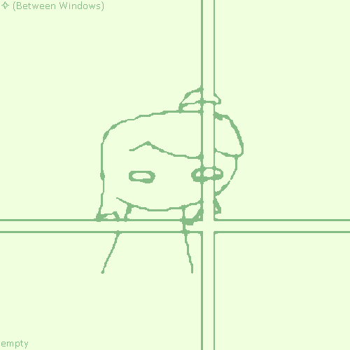

And on a long perilous night, i saw her again, sitting idly in the snowy cliff, staring at the frozen sea. "its been a long tiring night, hasn't it?" she looked onto the distant mountains, barren as they are.
the snow hasn't stopped ever since the strange light entity left, and being the only two people left on the planet, they decided to spend the rest of their days in the mountains, counting their days before it all falls apart.
~ ~ ~ ~
between the window frame, i can see your empty eyes still staring back at me

~ ~ ~ ~
my gift for you,
you may have it for free
(c) 20xx, JJJ n' Co, Empty Panel Comics